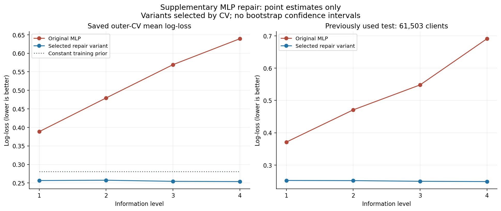
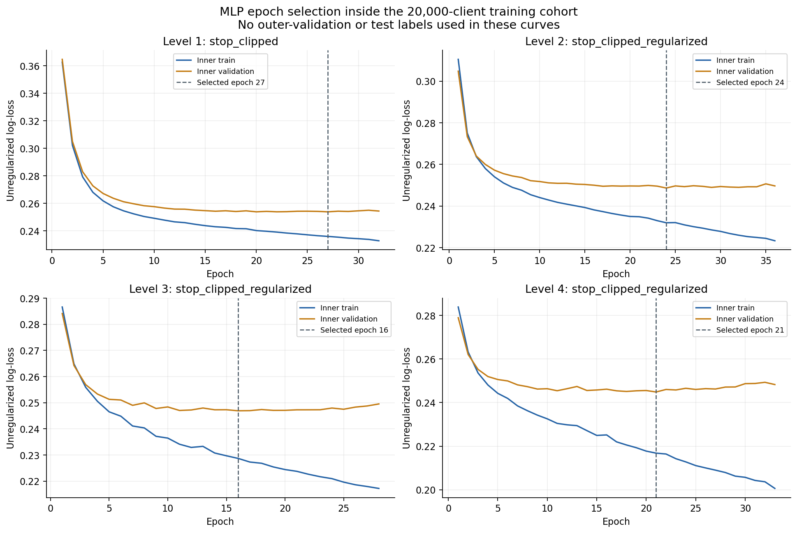

Результаты основного эксперимента сохранены отдельно. Этот анализ выполнен после просмотра прежнего test и имеет исследовательский характер.
Проверены четыре заранее заданных варианта MLP на четырёх уровнях и трёх сохранённых внешних CV-фолдах: 48 внешних CV-оценок.
Каждая процедура включает внутренний выбор эпох по log-loss и отдельное обучение с нуля на всём доступном train. Поэтому 48 CV-оценок соответствуют 96 траекториям оптимизатора, а не 48 вызовам partial_fit.
По заранее записанному CV-критерию к итоговой оценке допущено 4 из четырёх уровней. Число итоговых процедур: 4; они добавляют 8 траекторий оптимизатора.
Level 1: выбран stop_clipped; CV log-loss 0.388510 → 0.256627. Test log-loss 0.371204 → 0.252460; AP 0.144538 → 0.219154; выбрано 27 эпох.
Level 2: выбран stop_clipped_regularized; CV log-loss 0.479511 → 0.257432. Test log-loss 0.470858 → 0.251954; AP 0.136435 → 0.220370; выбрано 24 эпох.
Level 3: выбран stop_clipped_regularized; CV log-loss 0.569388 → 0.254466. Test log-loss 0.548138 → 0.249881; AP 0.142688 → 0.233265; выбрано 16 эпох.
Level 4: выбран stop_clipped_regularized; CV log-loss 0.639396 → 0.253838. Test log-loss 0.691036 → 0.249034; AP 0.138913 → 0.235569; выбрано 21 эпох.
Уменьшение CV/test log-loss описывает результат этого дополнительного эксперимента. Оно не доказывает, что найдена единственная причина исходной неудачи MLP.
| level | variant | eligible_for_test | original_cv_log_loss | repaired_cv_log_loss | original_test_log_loss | repaired_test_log_loss | original_test_pr_auc_average_precision | repaired_test_pr_auc_average_precision | best_epoch |
|---|---|---|---|---|---|---|---|---|---|
| 1 | stop_clipped | True | 0.388510 | 0.256627 | 0.371204 | 0.252460 | 0.144538 | 0.219154 | 27 |
| 2 | stop_clipped_regularized | True | 0.479511 | 0.257432 | 0.470858 | 0.251954 | 0.136435 | 0.220370 | 24 |
| 3 | stop_clipped_regularized | True | 0.569388 | 0.254466 | 0.548138 | 0.249881 | 0.142688 | 0.233265 | 16 |
| 4 | stop_clipped_regularized | True | 0.639396 | 0.253838 | 0.691036 | 0.249034 | 0.138913 | 0.235569 | 21 |


| level | variant | variant_order | mean_log_loss | std_log_loss | mean_ap | mean_best_epoch |
|---|---|---|---|---|---|---|
| 1 | stop_only | 0 | 0.257814 | 0.003668 | 0.199110 | 21.333333 |
| 1 | stop_regularized | 1 | 0.257592 | 0.003636 | 0.198797 | 23.666667 |
| 1 | stop_clipped | 2 | 0.256627 | 0.003811 | 0.203706 | 22.000000 |
| 1 | stop_clipped_regularized | 3 | 0.256748 | 0.003971 | 0.201277 | 27.000000 |
| 2 | stop_only | 0 | 0.261562 | 0.004434 | 0.194294 | 19.000000 |
| 2 | stop_regularized | 1 | 0.261448 | 0.004712 | 0.194949 | 22.333333 |
| 2 | stop_clipped | 2 | 0.257560 | 0.004895 | 0.203561 | 19.333333 |
| 2 | stop_clipped_regularized | 3 | 0.257432 | 0.005002 | 0.205014 | 22.333333 |
| 3 | stop_only | 0 | 0.263266 | 0.003536 | 0.196112 | 15.666667 |
| 3 | stop_regularized | 1 | 0.262100 | 0.003753 | 0.196309 | 15.666667 |
| 3 | stop_clipped | 2 | 0.254882 | 0.005901 | 0.210547 | 16.000000 |
| 3 | stop_clipped_regularized | 3 | 0.254466 | 0.005850 | 0.210463 | 16.000000 |
| 4 | stop_only | 0 | 0.266520 | 0.000156 | 0.202275 | 15.666667 |
| 4 | stop_regularized | 1 | 0.263658 | 0.001491 | 0.202088 | 15.666667 |
| 4 | stop_clipped | 2 | 0.254446 | 0.006733 | 0.216793 | 15.666667 |
| 4 | stop_clipped_regularized | 3 | 0.253838 | 0.006434 | 0.220005 | 16.333333 |